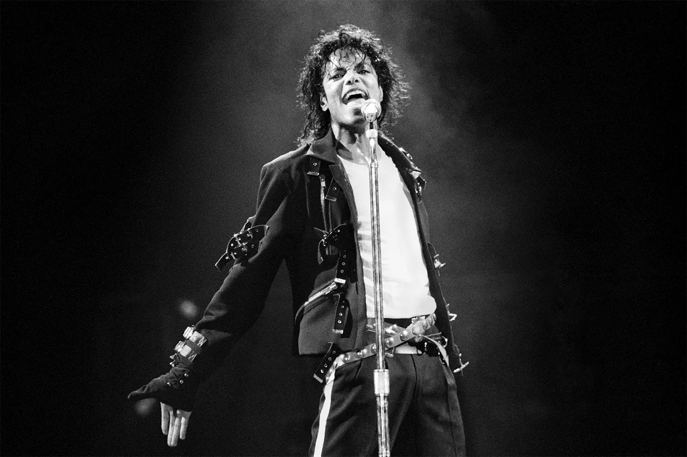

Discover the Legend
Explore the life and legacy of Michael Jackson, the King of Pop.

Welcome to the Official Website
Michael Jackson was not only a musical genius but a cultural icon. From his groundbreaking albums to his unforgettable performances, Michael’s influence on music and entertainment is unmatched. Dive into his world and explore his impact on the music industry, his groundbreaking albums, and his many iconic moments.
About Michael
Michael Jackson, born August 29, 1958, in Gary, Indiana, rose to fame at a young age and revolutionized the music world. His innovative music videos, mesmerizing dance moves, and unmatched vocal talents made him one of the most influential artists in the history of music. His albums like *Thriller*, *Bad*, and *Dangerous* are landmarks in the pop music landscape.